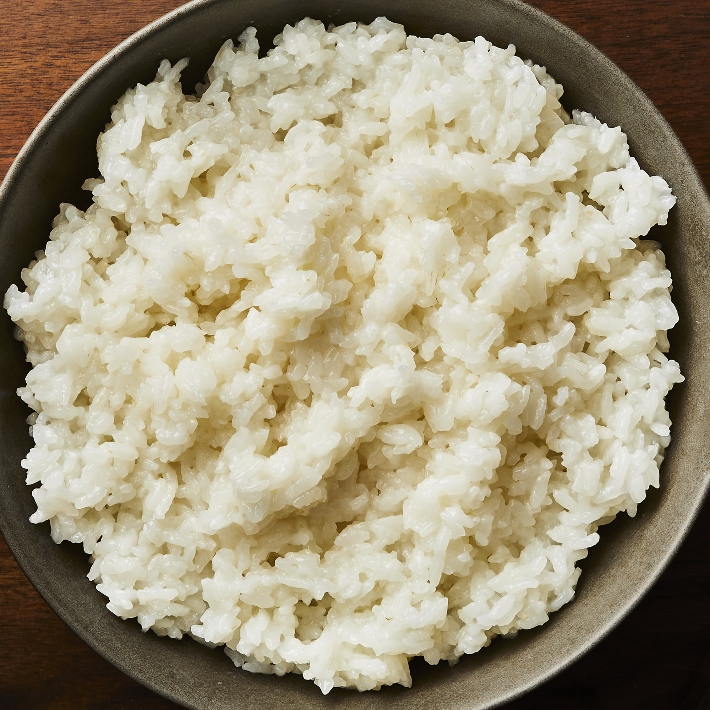

Sushi Rice

Description
Sushi rice, might look like simple rice, but has a tasteful flavor to it,
Ingredients
- 2 cups uncooked glutinous white rice (sushi rice)
- 3 cups water
- ½ cup rice vinegar
- 1 tablespoon vegetable oil
Steps
- Rinse the rice in a strainer or colander under cold running water until the water runs clear.
- Combine rice and water in a saucepan over medium-high heat and bring to a boil. Reduce heat
to low, cover, and cook until rice is tender and all water has been absorbed, about 20 minutes.
Remove from stove and set aside until cool enough to handle.
- Meanwhile, combine rice vinegar, oil, sugar, and salt in a small saucepan over medium heat.
Cook until the sugar has dissolved. Allow to cool, then stir into the cooked rice. While mixture
will appear very wet at first, keep stirring and rice will dry as it cools.